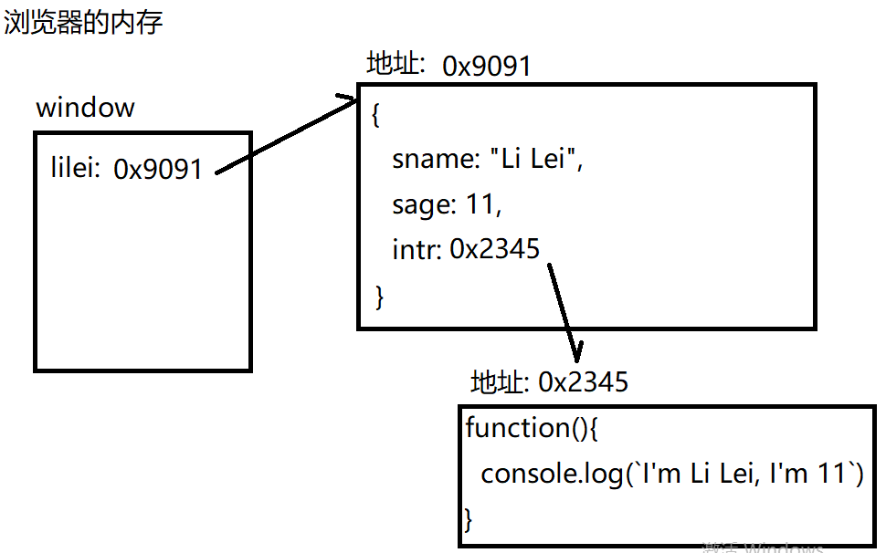
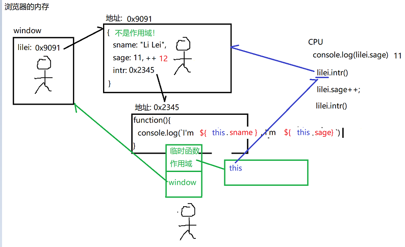

# 正则表达式
# 什么是
计算机中描述一个字符串中字符出现规律的规则
# 为什么
因为计算机不懂人类的词汇的规则，所以需要人教计算机认识人类语言中词汇的规则：手机号，身份证号，车牌号。。。
# 何时使用
# 2种
- 验证输入的字符串格式
- 在字符串中查找敏感词时
# 如何使用
# 最简单的规则其实就是敏感词原文：
比如: 我草
规定
必须是2个字
第一个字必须是我
第二个字必须是草
问题: 只要敏感词一变，就找不到了！
# 字符集:
什么是：描述一位字符上多个备选字的集合
何时：如果敏感词中一位字符有多种备选字的可能时。
如何: [备选字列表]
比如: 想匹配多种草字: 草，艹，操，槽
[草艹操槽]
强调
字和字之间不要带任何分隔符！
效果: 多个字每次选其一匹配
简写：如果备选字列表中部分字符是连续的
比如: 一位数字：[0123456789]
一位大写字母: [ABC...]
可用-省略中间字符，-读作"到"
重要的简写
一位数字：[0-9]
一位大写字母: [A-Z]
一位小写字母:[a-z]
一位字母：[A-Za-z]
不能是[A-z]
因为在ASCII表中，大写字母和小写字母不连续。A-Z: 65~90 []_` a-z:97~122。选择范围大于字母的范围。可能错选。
一位字母或数字: [0-9A-Za-z]
一位汉字: [\u4e00-\u9fa5]
# 预定义字符集:
什么是: 对常用的字符集提供的更简化写法
包括:
一位数字： \d 等效于 [0-9]
一位字母、数字或_:
\w 等效于 [0-9A-Za-z_]
一位空字符：\s 可匹配:
空格、制表符Tab等一切看不见的空字符
所有文字（通配符）： .
# 数量词:
什么是: 专门定义一个字符集出现次数的规则
何时: 只要一个字符集可能出现多次，都要用量词修饰。
如何: 2大类：
- 有明确数量边界:
字符集{5} 必须重复出现5次
字符集{4,6} 4次到6次
字符集{6,} 6次以上，多了不限 - 没有明确数量边界：
字符集* 可有可无，多了不限
字符集? 可有可无，最多一次
字符集+ 至少一个，多了不限 - 选择:
什么是: 在多个子规则选其一匹配即可
何时: 如果希望在多个子规则中选其一匹配时，就用选择。
如何: 子规则1 | 子规则2
或
意思: 要么选择左边的子规则1匹配，要么选择右边的子规则2匹配 - 分组:
什么是: 将多个规则分为一组先匹配，再和分组外的规则联合匹配。
何时: 希望多个规则局部先匹配，再和外部组合时。
如何: (多个规则)
贪婪模式 和 |
默认情况: 正则表达式都是采用贪婪模式匹配尽量长的满足规则的字符串
比如: 只想匹配4位或6位数字的验证码，不想匹配五位的数字。
\d{4}(\d{2})?
先固定4位,后两位整体可有可无最多一次
但是: |不遵守贪婪模式，会按顺序优先匹配。一旦前一个规则匹配上了，就算后一个规则也匹配，也不再执行。
比如: \d{4}|\d{6} 几乎永远只能匹配4位，无法匹配6位。因为即使是六位数字也会先匹配\d{4}，而导致后边的\d{6}不再起作用。
如果非用或，也要颠倒位置: \d{6}|\d{4} - 特殊位置:
三个位置: 字符串开头^，字符串结尾$，单词边界\b
何时: 如果不想匹配全部，而是只想匹配指定位置上的敏感词时，才用特殊位置。
比如: 开头的空字符: ^\s+
结尾的空字符：\s+$
开头或结尾的空字符: ^\s+|\s+$
单词边界: \b[a-z]
强调
\b等于空格吗？等于标点符号吗？
都不等于。
\b是一个位置，不是字符，不等于空格和标点符号。
# String提供的正则函数
# 查找敏感词——4种不同场景
# 1. 在字符串中查找一个固定的敏感词出现的位置：
var i=str.indexOf("敏感词",fromi)
位置<的<敏感词
在str中，从fromi位置向后，找下一个"敏感词"的位置。
返回值: 如果找到，返回敏感词第一个字的位置i。
如果没找到返回-1.
问题
只能查找一个写死的固定的敏感词。一旦敏感词有任何稍微的修改，都会导致查找不到。
# 2. 用正则表达式查找多种敏感词的位置
var i=str.search(/正则/i)
问题
只能获得位置，无法获得敏感词的内容
# 3. 查找敏感词的内容:
var arr=str.match(/正则/i)
在str中查找符合正则表达式要求的敏感词，返回其内容和位置。
返回值:
如果找到，返回一个数组arr:
| Tables | Are | Cool |
|---|---|---|
| 0 | ... | "index" |
| "敏感词" | ... | 位置i |
本质
无论是0，还是index其实都是房间号（下标）。访问时都是用[下标]。只不过数字不加""，而字符串下标要加""。
如果想获得本次找到的敏感词内容:
arr[0]
如果想获得本地找到的敏感词的位置:
arr["index"] 可简写为 arr.index
在运行时，arr.index会被自动翻译为["index"]
强调
必须加""，如果不加，index就变成变量，而在全局没有名为index的变量，就会报错。
如果没找到，返回null ——重大隐患
null和undefined之后什么都不能跟，比如: 不能加. 不能加()，只要加就报错。
所以，今后，只要碰上可能返回null的函数，都要先判断不是null，再使用。
问题
只能查找一个敏感词，就下班了！
解决: 正则还有一个后缀g, 意为global全部
如果正则加了g，就不能只找一个，而是必须找完所有才能下班。
坑
一旦match中的正则加了后缀g，返回值就会有巨大变化:
如果找到，还是返回数组，只不过数组中就不包含敏感词的位置了，而仅包含多个敏感词的列表：
["敏感词1","敏感词2","敏感词3",...]
0 1 2
问题
不加g，只能找一个，但是有位置
加g，可找所有，但是没有位置了
# 4. 即查找每个关键词的内容，又查找每个关键词的位置。
String自己做不了，依靠下午将的regexp对象
# 替换
# 1. 简单替换: 将所有敏感词都替换为统一的新值
str=str.replace(/正则/ig,"新值")
将str中所有符合正则要求的敏感词都替换为一致的"新值"
坑
字符串都是不可变类型。一旦创建，内容就无法修改了。所有对字符串的修改，都无权直接修改原字符串。只能返回新字符串。所以，必须自己用=赋值的方返回的新字符串保留下来。如果不赋值，就丢弃。
# 2. 高级替换: 根据不同的敏感词，选择替换成不同的新值
str=str.replace(
/正则/ig,
//第二个参数变成了一个匿名函数
function(kword){//要求1: 必须有一个形参
//要求2: 必须返回修改后的新值
return kword.toUpperCase();
}
)
原理:
replace会拿着正则表达式取str中找每个符合条件的敏感词。
每找到一个，就自动调用匿名函数。并自动将本次找到的敏感词传给形参。
在匿名函数内，加工形参，得到新值，被return返回到匿名函数外部。
返回的新值再被replace替换到str中当前位置。
衍生操作: 删除敏感词，其实即使替换为""
str=str.replace(/正则/ig,"")
# 切割
什么是：按字符串中一个指定的切割符，将一个字符串，切成多段子字符串
何时: 将一个字符串的内容转为数组
如何: 2种:
# 1. 简单切割: 分隔符是固定的
var arr=str.split("分隔符")
强调
切割后的数组内容中，不包含切割符
# 2. 复杂切割: 分隔符不是固定的
var arr=str.split(/正则/)
执行时，会将一切符合正则的字符都当做分隔符
# RegExp对象
# 什么是
专门保存一条正则表达式，并提供用正则表达式执行验证和查找功能的函数
# 何时
今后只要在程序中使用正则表达式，就都需要创建正则表达式对象来保存一条正则表达式。
# 如何
创建: 2种:
# 1. 用双/： var reg=/正则/ig
何时: 如果正则表达式是固定不变的，则首选着第一种方式快速创建。
问题: 如果正则不是固定的，需要根据其他数据动态生成，则//之间不能写js表达式。因为//之间是正则的地盘。
# 2. 用new: var reg=new RegExp("正则","ig")
强调: 用""，就不用加/了
何时: 如果正则表达式不是固定的，需要根据其他变量或数组动态拼接生成，就必须用new RegExp()
因为new RegExp的参数是字符串。在js中可以有无数种方法拼接处任意自己想要的字符串后，再给RegEx
# 函数
# 1. 验证字符串格式
var bool=reg.test(str)
用正则表达式reg去检查字符串str是否符合正则的格式要求。返回bool值。所以，reg.test()可直接当做判断条件。
坑: 其实test默认只要在字符串中找到符合条件的内容，就返回true。不要求字符串和正则从头到尾完整匹配。
解决: 今后凡是验证，必须都要前加^，后
# 2. 第四种查找方式: 即找每个敏感词的内容，又找每个敏感词的位置
var arr=reg.exec(str)
在字符串str中查找下一个符合正则表达式reg要求的敏感词的内容和位置。
强调
- 执行一次，只能找一个敏感词
- 要想找所有，必须加g
- 返回值: 同match不加g的情况
| Tables | Are | Cool |
|---|---|---|
| 0 | ... | index |
| 敏感词 | ... | 敏感词的位置i |
vs match:
match，无论反复调用多少次都只能找第一个敏感词。
exec，如果反复调用，会自动向后查找，每次都找下一个敏感词。如果找不到，就返回null
# Function
# 什么是
程序中封装一段可重复执行的代码段的程序结构，再起一个名字。
# 何时
只要一段代码可能多次重复使用时，都要封装在函数里。
# 如何-2步
# 1. 创建函数：3种
# 1. 声明方式:
function 函数名(形参列表){
函数体;
return 返回值;
}——这个整体称为一个函数声明
强调:
- function 在程序中是一个动词，每执行一次function 就会重新创建一个新函数。
- 形参:
什么是: 专门接收传入函数的数据的变量——函数内部专用的局部变量
为什么: 函数体中，有些数据是不能写死的，是需要根据外部情况，动态变化的。
何时: 只要函数中有依赖于外部动态变化的值，就都要用形参来获得。 - 返回值:
什么是: 函数内部的执行结果，被抛出到函数外部，让外部可以继续使用函数的处理结果。
为什么: 因为函数外部的调用者需要获得函数的执行结果。
何时: 只要函数外部的调用者需要获得函数的执行结果，继续后续操作时，就要用返回值。
js最核心原理之一:
函数其实也是一个对象
函数名其实只是一个普通的变量
函数名变量中保存着函数对象的地址值，通过内存地址，引用着函数对象。
当调用时，js引擎先找到函数名变量，再通过函数名变量中的地址，找到函数对象，再执行函数对象中保存的函数体。
声明方式创建函数的问题: 会被声明提前hoist
什么是: 在程序开始执行前，程序先找到所有var声明的变量和function声明的函数，提前到当前作用域的顶部集中创建。赋值留在原地。再开始顺序执行剩下程序。
声明提前是js广受诟病的缺陷
# 2. 用赋值方式创建函数:
优点：函数定义不会被声明提前
var函数名=function (形参列表){
函数体;
return 返回值;
}
结果: 除了不会被声明提前之外，其余用法和普通函数定义完全一样！
揭示了一个js最核心的原理之一
函数名其实就是一个普通的变量
函数体其实是一个对象
# 3. 用new来创建:
var 函数名=new Function("形参1", "形参2",...,"函数体")
# 2. 调用函数：
var 变量=函数名(实参值列表)
原理: 通过函数名找到当前函数，执行函数体中的代码，将实参值列表中的数据，对位赋值给形参变量在函数内部使用。如果有返回值，则通过等号赋值给左边的变量。
强调
一个函数，如果只是定义，而没有加()调用，则不会执行函数的内容。即使函数内容写错！也不报错！
# 重载(overload)
# 什么是
相同函数名，不同形参列表的多个函数，在调用时可自动根据传入实参列表的不同，自动选择匹配的函数版本调用。
# 为什么
减少函数的个数，便于调用者调用和记忆
# 何时
一件事，可能根据不同的实参值，执行不同的操作时。
# 如何
其它语言:
- 先定义多个相同函数名，不同形参列表的函数
- 用统一的函数名，调用函数，传入实参列表。
结果: 其它语言可自动根据传入的实参值列表不同，自动匹配对应的函数，调用。
问题: js不支持多个同名函数同时存在！所有，js不支持其它语言那种重载的方式。
其实，js支持重载效果，但是需要变通实现。
如何: - 既然多个函数不让定义，就定义1个！这一个函数中要包含所有情况的定义。
- 用arguments对象自动接住函数外部传入的实参值列表。并判断arguments中的实参个数或实参值
arguments: 每个函数中自带的，专门自动接收所有传入函数的实参值列表的，类数组对象。
每个函数中自带: 不用我们手动创建
接收所用传入实参值得列表——用途
类数组对象: 长得像数组的对象
vs 数组
相同: 1. 下标, 2. length
不同: 不是同一种类型。不是一家人。类数组对象不能使用数组家的函数。
当函数执行时，即使不定义形参，也可以随意传入任意多的实参值。不会报错。因为内部都有arguments对象接住所有的实参值。
# 匿名函数
# 什么是
定义函数是不定义函数名的函数
# 如何
# 1. 回调函数：
什么是: 自己定义的函数，自己不执行，而是交给别的函数去自动调用执行。什么时候执行，执行几次，与咱们无关。
为什么: 节约内存，用完一次后，自动释放！
比如:
arr.sort(function(a,b){return a-b})
setTimeout(function(){ ... }, ms)
str.replace(/正则/ig, function(kword){
return 新值
})
# 2. 自调:
什么是: 定义完函数，立刻调用自己
为什么: 防止全局污染
全局污染: 保存在全局的变量，可能被任何位置篡改。——将来禁止使用全局变量
何时: 今后所有js代码，都应该包裹在匿名函数自调中。而避免使用全局变量。造成全局污染
如何:
(function(){
函数体
})();调用
说明: 加上匿名函数自调的代码，和不加匿名函数自调的代码功能，完全一样。只不过避免了使用全局变量，将来造成全局污染。
强调
匿名函数自调之后，必须分号结束
# 作用域(scope)和作用域链(scope chain)
# 什么是
一个变量的可用范围
# 为什么
避免不同范围的数据之间互相干扰！
包括: 只有2级:
# 1. 全局作用域:
什么是: 在程序任何位置都可以访问到的，其实就是window对象。
何时: 如果一个变量可能夸多个函数反复使用，都要定义在全局。但是，今后，仍然禁止使用全局变量。
如何: 凡是不属于任何函数或对象内的，独立的变量和函数，都是全局变量和全局函数。
# 2. 函数作用域:
# 什么是
仅在当前函数内可用的范围
# 何时
绝大多数情况下，数据都是仅在当前函数内使用就够了。所以，绝大多数情况下优先用局部变量。
# 如何
2种:
a. 在函数内var出的变量和function创建的内层函数，都是仅局部使用的。出了函数不可用
b. 函数的形参变量，虽然没有var，但是也是在调用函数时临时创建的局部变量。仅函数内可用
# 原理
其实函数作用域，也是一个临时对象
如果一个函数仅定义，不调用，是没有临时的函数作用域对象的。也没有局部变量。
当调用一个函数时，才临时创建当前函数的作用域对象。并在作用域对象中创建局部变量
# 调用过程中
优先使用局部变量，局部没有才去全局找。
# 函数调用后
临时的函数作用域对象就没人要了。就自动释放了。同时，局部变量一同释放。
所以，局部变量，不可重
js中没有局部(块级)作用域:
js中不是所有{}都是作用域的
比如:
for(){ ... }
if(){ ... } else { ... }
while(){ ... }
... ...
都不是作用域，这些{}内部的变量出了{}依然可用 比如:
for(var i=1, sum=0;i<=100;i++){
sum+=i;
}
console.log(sum)
再比如:
if(...){
var sql="aaa"
}else{
var sql="bbb"
}
pool.query(sql,...)
vs java是三级作用域
多了局部(块级)作用域
在java中:
for(){ ... }
if(){ ... }else{ ... }
这些大括号都是作用域 在java中，这些大括号里的变量出了{}，都不能用了。 比如：以上两种写法，在java中都是错误的！ 应该改为:
var sum=0;
for(var i=1;i<=100;i++){
sum+=i;
}
console.log(sum)
再比如：
var sql;
if(...){
sql="aaa"
}else{
sql="bbb"
}
pool.query(sql,...)
# 作用域链
# 什么是
由多级作用域对象，逐级引用，形成的链式结构
# 为什么
函数执行时，难免自己缺少一些变量，需要从全局的公共区域查找。
# 如何
- 每个函数其实都有一个"好友列表"，记录着自己将来可以找谁借钱！
- 函数不调用时，好友列表中，只有window，所有函数都将window当做备胎
- 当函数调用时，临时创建了自己的函数作用域。会将临时的函数作用域加入好友列表中，window之前。
- 当函数中用到变量时，按"好友列表"的顺序，在作用域链中查找变量使用。
使用顺序:
先在局部找。
局部没有，才去全局找。
# 闭包: closure
# 什么是
即重用一个变量，又保护变量不被篡改的一种机制。
# 为什么
全局变量，还是局部变量都有不可兼得的优缺点:
全局变量: 优: 可重用， 缺: 易被污染
局部变量: 优: 不会被污染， 缺: 不可重用
# 何时
如果希望给一个函数保存一个专属的可重用的变量时，都要用闭包
# 如何
a. 用外层函数包裹受保护的变量和内层函数对象
b. 外层函数将内层函数的对象返回到外层函数外部
c. 使用者需要调用外层函数，获得返回的内层函数，再起一个名字。
# 结果
受保护的变量，不会被全局的语句修改，且被当前内层函数反复使用了。
笔试: 闭包是如何形成的？
外层函数调用后，外层函数的作用域被内层函数引用着，无法释放！
缺点: 比普通的函数多占用一块内存空间（父母函数的局部变量）
解决: 一旦闭包不再使用，应该立刻释放！
将保存内层函数的变量赋值为null，就释放了内层函数对象，同时释放了父母的函数作用域。
比喻: 简单描述什么是闭包:
父母生了一个孩子
给孩子包了一个红包，红包装在孩子兜里，只能孩子用。
# 面向对象
# 什么是对象——2个概念
# 用途
程序中描述现实中一个具体实物的属性和功能的程序结构
# 本质
内存中一个块集中存储一个实物的多个属性和功能的存储空间。
# 什么是面向对象
将来的程序都是先用对象描述出不同的事物的属性和功能，然后再按需访问对象中的属性和功能。
# 为什么
便于大量数据的使用和维护
# 何时
今后所有程序都是用面向对象。
# 如何
面向对象三大特点: 封装，继承，多态
# 1. 封装:
# 什么是
将一个事物的属性和功能集中定义在一个对象结构中——其实就创建一个对象
# 为什么
都是为了便于大量数据的管理和使用
# 何时
今后只要使用面向对象的方式编程，第一步都是创建对象。然后才是按需使用对象中的属性和功能。
# 如何——3种
# 1. 用{}
var 对象名={
属性名: 属性值,
... : ...,
功能/方法: function(){ ... },
... : ...
}
何时: 在创建对象时，已经知道对象中将要包含什么内容。
比如:
var lilei={
sname: "Li Lei",
sage: 11,
intr: function(){
console.log(`I'm Li Lei, I'm 11`)
}
}
在内存中：

# 问题
对象的属性值发生变化，而方法中的内容不会跟着变化。
# 原因
方法中的输出内容是写死的
# 错误的解决方案
将写死的值，改为属性名，在运行时动态获得属性值。
# 原因
不带任何前缀的变量，默认只能在自己的函数作用域和window之间找。无权在对象里找。因为所有对象都不是作用域。
# 不好的解决方案
在属性名前加固定的对象名。
# 问题
对象名其实就是一个变量名，很可能被修改。一旦对象名修改，方法内忘记修改，立刻就报错！——紧耦合
# 最优的解决方案
使用this关键字
# 什么是
每个函数作用域中自动添加的，自动引用正在调用函数的.前的那个对象的 关键词

# 何时
今后只要对象自己的方法，想使用自己的属性，也必须加this.前缀。
# 笔试时
判断this一定不要看定义在哪儿。必须看调用时，.前是谁！
# 比如
var fun=lilei.intr;
lilei将自己的intr函数的地址值给了全局变量fun。从此fun和lilei.intr共同引用同一个函数.
fun();
结果输出I'm undefined, I'm undefined。因为fun()调用时，前边没有. 。如果没有.的一切都会被自动加上window.， 所以，fun()调用时this->window。因为window中没有sname和sage属性，所以，返回undefined
# 访问对象的成员
成员=属性+方法
# 访问属性
属性其实就是保存在对象内部的变量而已。用法和变量完全一样。只不过查找时，要先找到对象，再用.运算符找到对象内的指定属性。
# lilei.sname 的调用方法
方法其实就是保存在对象内部的函数而已。用法和函数完全一样。只不过查找时，要先找到对象，再用.运算符找到对象内的指定方法，然后加()调用方法。
lilei.intr()
# 2. 用new来创建——2步
# 1. 先用new 创建空对象:
var obj=new Object();
new可省略, ()可省略
不能同时省略
其实就可以简写为
var obj={};
# 2. 向空对象中添加成员:
js中想向一个对象中添加新成员，只有一个野蛮的办法，就是强行赋值！
obj.新属性=值
obj.新方法=function(){ ... }
何时: 如果创建对象时，暂时不知道对象中的成员具体内容时。
揭示: 所有对象底层其实都是关联数组！
- 都是名值对儿的集合。
- 都可用下标或.的方式访问每个成员
翻译
比如:
ym["math"]<---ym.math
lilei["sname"] lilei.sname
如果访问成员时:
成员名是写死的，即可用.，又可用["成员名"]
成员名不是固定的，可能来自于变量或拼接，则必须用[ 变量/表达式 ]，且不要加""
3. 都可用for in遍历:
for(var key in 对象/关联数组){
key自动获得当前属性名
数组[key] 获得当前属性值
对象[key] 获得当前属性值
}
强调
[key]一定不要加引号，因为key是变量，从来没有将变量加在""中的写法！一个变量如果加上""，就不能再变化了！
- 访问数组或对象中不存在的位置都不会报错！而是返回undefined
- 强行给数组或对象中不存在的位置赋值，不会报错！而是自动添加该成员。
前两种方式，一次只能创建一个对象。如果反复创建多个相同结构的对象时，代码会很繁琐！
# 3. 用构造函数来创建:
什么是: 2个概念
- 专门描述一类对象的统一结构的函数
- 专门用于创建同一类型多个对象的特殊函数
何时: 只要反复创建多个相同结构的对象时，都要用构造函数来创建 如何: 2步: a. 定义构造函数，其中描述同一类型所有对象的统一结构。不需要指定具体属性值。
function 类型名(形参列表){
this.新属性1=形参;
this.新属性2=形参;
this. ... = ...;
this.新方法=function(){
... ...
}
}
b. 调用构造函数，创建该类型的一具体个对象实例。
var obj=new 类型名(属性值列表)
↑ 构造函数名 new的原理: new干了四件事:
- 新建一个空对象
- 自动设置当前对象继承构造函数的老公——原型对象爸爸
- 用新对象去调用构造函数。会自动将构造函数中所有this都指向新对象。然后，再用强行赋值的方式，给新对象添加新属性
- 返回新对象的地址给变量保存起来。 构造函数的问题: 虽然重用了结构代码，但是反复调用了function，创建了多个方法的副本。浪费了内存。
# 2. 继承:
# 什么是
父对象的成员，子对象无需重复创建，就可直接使用！
# 为什么
代码重用和节约内存！
# 何时
多个子对象，都拥有相同的方法定义时。就应该找一个共同的父对象。将相同的方法定义，保存在父对象中一份。所有孩子自动继承共用。
# 如何
js中实现继承都是用原型对象实现的。
# 什么是原型对象
集中保存同一类型下所有子对象共有成员的父对象
# 何时
只要当前类型下的所有子对象都需要一批共有的成员时，就需要在原型对象中同一定义。
# 如何
- 创建: 买一赠一，不用创建
js中买妈妈赠个爹！
构造函数妈妈的prototype属性引用着自己的老公——原型对象爸爸。原型对象中的constructor属性引用着自己的老婆——构造函数妈妈 - 何时继承: 不用自己设置！
new的第2步: 自动设置当前对象继承构造函数的老公——原型对象爸爸 - 我们做什么？决定把什么东西放到原型对象中，让所有子对象共用。
今后只要多个子对象共用的属性值和方法定义，都不要放在构造函数里。应该放在原型对象中
如何: 强行赋值: 构造函数.prototype.新成员=新值